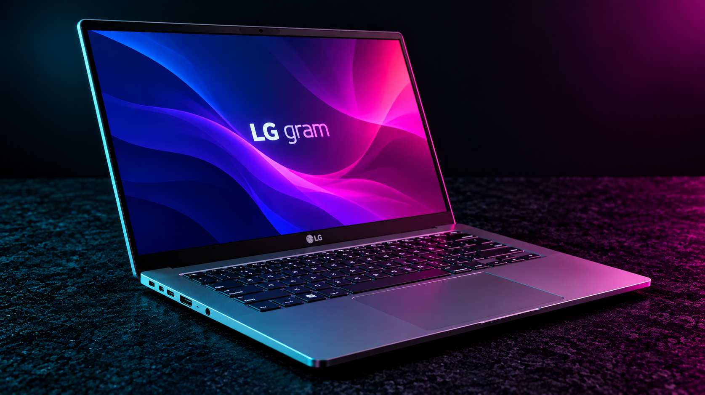

Technical Reference
Startup and firmware
| Topic | Procedure / notes |
|---|---|
| BIOS setup | F2 at startup on many LG gram models. |
| Boot menu | F10 on many models; verify model documentation. |
| Recovery | LG Recovery options vary by model, region, and factory image. |
| Model lookup | Use full LG model identifier for drivers, batteries, and panel specifications. |
Repair workflow
| Topic | Procedure / notes |
|---|---|
| Battery | Disconnect AC and internal battery before servicing; follow model-specific battery connector direction. |
| Storage | Check installed M.2 form factor, PCIe generation and available slot; some models provide multiple SSD slots. |
| Memory | Many thin gram models have soldered RAM; verify before promising upgrades. |
| Display | Thin panels and narrow bezels are fragile; avoid pressure and verify exact panel cable/pinout. |
Troubleshooting
| Topic | Procedure / notes |
|---|---|
| No charging | Confirm compatible USB-C PD wattage and test charger/cable independently. |
| Wireless | Install LG-approved chipset and WLAN drivers for exact model. |
| Thermals | Check intake clearance and fan operation; ultra-light chassis may throttle under sustained workloads. |
Service note: Model, firmware version and region can change key combinations and hardware options. Verify the exact device service manual and back up important data before repairs.